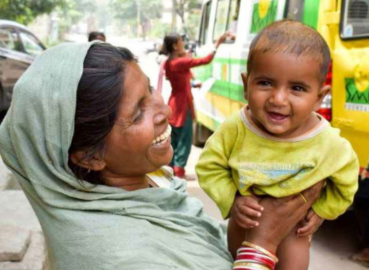
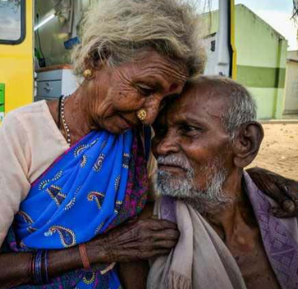
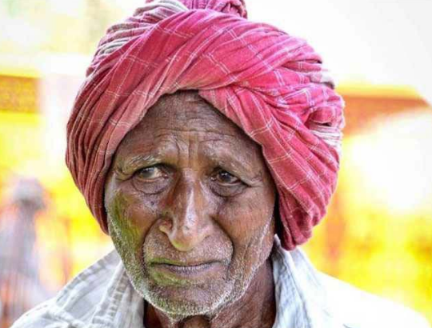
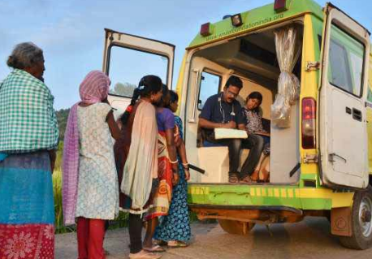

Gaurav, Haryana
“When I took him to the doctor his scalp looked scary,
now he has recovered and is so happy.”
When Rita and Sandeep had Gaurav six months back the condition of their family was bad. Being daily wage earners it became very difficult for them to bear expenses. Soon after the baby’s scalp started to turn red and flakes began to appear on his scalp. Initially the mother did not notice but when the flakes turned heavy she began to go to a local doctor to cure her baby but he could not do much as it was difficult in these Corona Times. After hearing about the Give India, Rita took her baby to the clinic where he was prescribed an ointment. Gaurav began to recover in no time and his parents are overjoyed that he is growing up healthy and happy.

Savita, Chennai
“We are old and poor. Our health is failing.
We only find relief in each other.”
82 year old Savitha lives with her husband in a tin shanty in the middle of a congested and unhygienic Chennai slum. When their children refused to take care of them they had no option but to suffer silently. There was no one who could provide them warmth. Her husband is slowly losing his eye sight and both husband and wife are suffering from many other health problems due to their age. Give India took the responsibility to keep the people healthy and through regular visits, proper care and distribution of free medicines. Savitaa and her husband receive timely check-ups and are healthier

Mahesh, Telangana
“Our children always complained that we did not do
enough for them and then they left us in our old age.”
Mahesh and his wife have five daughters. They raised them with equal love and never did they regret not having a son. His children grew up, got married and moved to different places. They began blaming their parents for not providing enough for them and slowly over time stopped coming to see them altogether. Both Mahesh and his wife began to suffer from old age related problems and even when their mother was on her death bed none of the children came.Mahesh’s health too started to suffer after the demise of his wife and with no one to care for him he became weaker. It was during one of the community counseling sessions that Mahesh came to know about Give India org and asked for help. His health has improved and he also talks to the volunteers and jokes around with them. He tries to keep happy and healthy like the doctor asked him to.

Tribal Community
Kalahandi, Odisha
When a lot of children and adults began to fall sick at regular intervals the tribal community at Kalahandi, Odisha the people did not know who to turn to. Their regular visits to the local quacks increased but they could hardly provide any relief to the people. The residents of the area work as daily wage laborers and either cannot afford to go to a doctor or do not want to go to the doctor and lose a day’s wage. These kinds of health problems have been a common problem in the area because of unhygienic lifestyles and continuous neglect of minor health problems.
When the Give India's services started in the area it bought relief to 42 of the remotest of villages in Kalahandi. Launched in June 2015, the project has already benefitted a population of over 20,000 people. Various sensitization programs to spread awareness about health related issues are conducted regularly. Volunteers and ground staff pay door to door visits to create awareness about the benefits of availing a qualified doctor’s advice in case of an ailment.
Subscribe to our newsletter and follow us on our social media platforms to get daily updates or mail us for any queries